INTRODUCTION - PETROL FUEL INJECTION SYSTEM
- Path
- Descriptions > 10 ENGINE UNIT > 1056 PETROL INJECTION SYSTEM > INTRODUCTION - PETROL FUEL INJECTION SYSTEM
- Kind
- system description
- Applies to
- engines: 1.8 T.SPARK; all production periods
- Interactive page
- https://sloeber94.github.io/elrnDB-aGt/en/#/125000282
Applies to: engines: 1.8 T.SPARK; all production periods
BOSCH M7.3.1 EOBD injection system
VIEW OF ASSEMBLY
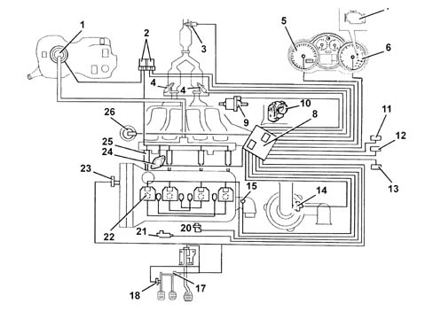
1 - Fuel pump
2 - Relays
3 - Lambda sensors downstream of the catalytic converter
4 - Lambda sensors upstream of the pre-catalyzer
5 - Speedometer
6 - Rev counter
7 - Injection warning light
8 - Injection/ignition control unit
9 - Fuel vapour recirculation solenoid
10 - Throttle body built into DVE
11 - Climate control system connector
12 - Tester connector
13 - Alfa Romeo CODE connector
14 - Air flow meter with air temperature sensor
15 - Coolant temperature sensor
16 - Dual brake pedal switch
17 - Clutch pedal switch
18 - Accelerator pedal potetiometer
19 - RPM sensor
20 - Knock sensor
22 - Ignition coil
23 - Timing sensor
24 - Phase transformer
25 - Injectors
26 - Modular intake manifold solenoid
Construction specifications
Engine with 4 cylinders in line, dual ignition, 16 valves, twin overhead camshaft, electro-hydrauilc phase transformer, motorized throttle casing, with Bosch Motronic ME7.3.1EOBD electronic integrated injection/ignition system.
General specifications
The unit is a system made up of the engine and all circuits required for its operation:
- fuel feed circuit
- air intake circuit
- engine cooling system
- exhaust system with two pre-catalyzers connected to the exhaust manifold and a main catalyzer located under the body.
- fuel vapour recirculation system.
The operation of these systems is optimised by an electronic control system governed by a control unit.
Operation of the injection/ignition system
The Bosch Motronic ME7.3.1 system with a motorized throttle belongs the category of systems integrated with:
- ignition
- phased sequential electronic injection.
The control unit controls the air flow rate at the idling speed set by the electronic throttle.
The control unit controls the ignition time, with the benefit of maintaining smooth engine operation even when environmental and applied load parameters change.
The control unit controls and manages the injection so that the air/fuel ratio is always close to the stoichiometric ratio to ensure maximum conversion efficiency for the catalyzers.
The main system functions are essentially as follows:
- self-learning;
- system self-adaptation;
- self-diagnosis;
- recognition of the Alfa Romeo CODE (immobilizer);
- cold starting check control;
- combustion - Lambda sensor control;
- knock control;
- control of enrichment during acceleration;
- Fuel cut-off during over-run;
- fuel vapour recovery;
- control of maximum rpm;
- fuel pump control;
- connection with climate control system;
- cylinder position recognition;
- control of optimum injection time for each cylinder;
- adjustment of ignition advance;
- idle speed management (also dependent on battery voltage);
- fan control;
- connection to ABS control unit;
- connection with the control panel;
- torque management;
- fuel system diagnostics;
- catalytic converter diagnostics;
- misfire diagnosis; detection of failed combustion
- Lambda sensor diagnostics.
Torque control strategy
The drive-by-wire control systems are vital in satisfying the legal requirements such as fuel consumption and emissions as well as for improving the driveability of vehicles with petrol engines (starting, heating, transition response, safe driving, immobilizer, etc.).
The torque for the most common petrol engines is mainly affected by the throttle valve which controls the mass of air drawn in by the engine (depending on the position of the accelerator pedal) and therefore also cylinder filling.
In addition to this there are other parameters that affect the variation of the engine torque: the angle of ignition, the air/fuel (Lambda) ratio, the deactivation of the injection for several cylinders, similar to the increase in pressure in supercharged engines with turbochargers.
Examples of other elements that affect torque are: the EGR, the adjustment of the camshaft and the switching of the intake manifold.
Injection system
The essential conditions to be met by the air-fuel mixture for efficient operation of engines with controlled ignition systems are mainly as follows:
- the metering (air/fuel ratio) must be kept as close as possible to stoichiometric levels to assure maximum catalytic converter conversion capacity (max. efficiency).
- homogeneity of the mixture, consisting of petrol distributed throughout the air as finely and uniformly as possible.
Information that the control unit processes to control optimum metering is received by electrical signals emitted by:
- air flow meter and air temperature sensor, for the exact quantity of air taken in
- rpm sensor that generates an alternating single-phase signal whose frequency is an indicator of engine rpm. The control unit uses this signal to detect MISFIRE.
- throttle potentiometer, to detect the required acceleration conditions
- coolant temperature sensor on the thermostat
- Lambda sensors to determine the oxygen content of the exhaust gases and, via the downstream sensor, to diagnose the efficiency of the catalyzers.
Ignition system
The ignition system is static, inductive discharge type (i.e. without a HT distributor) with power modules located inside the injection control unit.
The ignition system is arranged so that each coil supplies the spark plugs of the associated cylinder.
The advantages of this solution are:
- lower electrical overload;
- guaranteed constant discharge on each spark plug.
The control unit contains a memory map with a set of optimum ignition advance values (for the cylinder in combustion phase) that the engine can adopt according to the required speed and engine load.
The control unit corrects the advance value mainly on the basis of:
- engine coolant temperature
- intake air temperature
- detonation
- throttle valve position.
Information that the control unit processes to control the coils is received by electrical signals emitted by:
- air flow meter and air temperature sensor, for the exact quantity of air taken in
- rpm sensor that generates an alternating single-phase signal whose frequency is an indicator of engine rpm
- detonation sensor (on the rear part of the crankcase between cylinders 2 and 3) to recognise the cylinder with knock and thus correct the ignition advance.
- throttle position potentiometer to recognise minimum, partial and full load conditions.
- timing sensor.
OPERATION
Diagram showing information entering/leaving the control unit
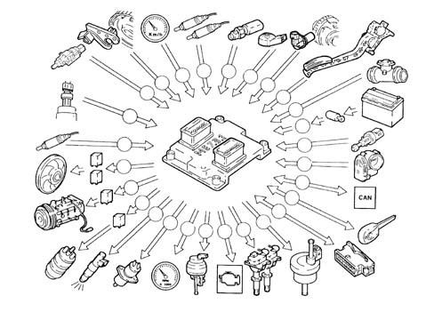
1 - Fuel pump
2 - Air conditioning compressor
3 - Fan
4 - Lambda sensors downstream of the catalytic converter
5 - Quadrinary
6 - Brake pedal switch
7 - Timing sensor
8 - Speedometer
9 - Lambda sensors upstream of the pre-catalyzers
10 - Coolant temperature sensor
11 - Knock sensor
12 - RPM sensor
13 - Accelerator pedal potetiometer
14 - Air flow meter with air temperature sensor
15 - Battery
16 - Clutch pedal switch
17 - Throttle body built into DVE
18 - CAN line (for communication with ABS/ASR control units)
19- Alfa Romeo CODE
20 - Diagnotic socket
21 - Fuel vapour recirculation solenoid
22 - Ignition coil
23 - Injection warning light
24 - Modular intake manifold solenoid
25 - Rev counter
26 - Phase transformer
27 - Injectors
Operating strategies
Self-learning
The control unit implements the self-learning logic in the following conditions:
- removing-refitting or replacement of the injection control unit
- removal-refitting or replacement of the throttle body built into the DVE.
- removal-refitting or replacement of the rpm sensor/phonic wheel for detection of misfiring.
The values stored by the control unit are maintained when the battery is disconnected.
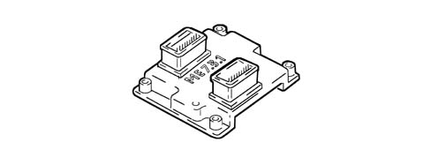
System self-adjustment
The control unit is equipped with a self-adjustment function that is designed to recognize the changes that take place in the engine due to the processes of bedding in and ageing of both the components and the engine itself in time.
These changes are memorized in the form of modifications to the basic map and are designed to adapt the operation of the system to the gradual alterations in the engine and the components compared with when they were new.
This self-adjustment function also makes it possible to compensate for the inevitable differences in any replacement components (due to production tolerances).
The control unit modifies the basic map in relation to engine specifications when new on the basis of an exhaust gas analysis.
The self-adjustment parameters are not deleted if the battery is disconnected.

Self-diagnosis
The control unit auto-diagnostic system checks that the system is working properly and signals any irregularities by means of an MIL warning light in the instrument panel with a standardized ideogram and colour laid down by European regulations. This warning light indicates engine management faults and also faults detected by EOBD diagnostic strategies.
The MIL warning light operating (mil) strategy is as follows:
- with the ignition on, the warning light comes on and remains on until the engine has been started up. The control unit self-diagnostic system checks the signals coming from the sensors comparing them with the permitted limits:
Fault indication during start up:
- the failure of the warning light to go out when the engine has been started indicates that there is an error memorized in the control unit.
Fault indication during operation:
- the warning light comes on in flashing mode to indicate possible catalytic converter damage due to misfiring.
- the warning light comes on in constant mode to indicate the presence of engine management or EOBD diagnostic errors.
RECOVERY
From time to time the control unit defines the type of recovery according to the components that are faulty.
The recovery parameters are managed by components that are not faulty.
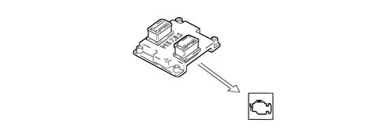
Recognition of the alfa romeo code
The moment the NCM control unit receives the ignition ON signal it converses with the Body Computer Node (Alfa Romeo CODE) to obtain the go ahead for starting.
This communication takes place via the dedicated two-way diagnostic serial line which connects the two control units.

Cold starting check
The following occurs in cold starting conditions:
- a natural weakening of the mixture (low evaporation of the fuel at low temperatures)
- fuel condensation on inner walls of the intake manifold
- higher lubrication oil viscosity.
The electronic control unit detects this condition and corrects the injection time on the basis of:
- coolant temperature
- intake air temperature
- battery voltage
- engine rpm.
The ignition advance is determined solely on the basis of rpm and coolant temperature.
Whilst the engine is warming up, the control unit operates the idle speed actuator to regulate the quantity of air required to ensure that the engine does not cut out.
The rotation speed decreases proportionally as the engine temperature increases until the nominal value is reached when the engine has warmed up.
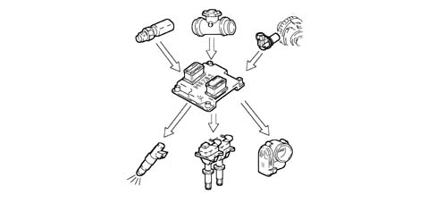
Combustion - lambda sensor check
In EOBD systems, the Lambda sensors are all the same type and located upstream of the catalytic conversion system and downstream of the converter. The upstream sensors monitor concentration and are known as the 1st loop (closed loop of upstream sensor). The sensor downstream of the catalyzer is used for the fault diagnosis of the catalyzer and for modulating the 1st loop control parameters. The second loop is therefore adaptive to make up for production discrepancies and slight drift that upstream sensor responses could experience due to ageing and contamination. This control is known as 2nd loop control (downstream sensor closed loop).
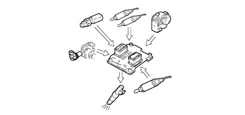
Check on phase transformer and modular intake manifold
In order to ensure the optimum quantity of air introduced by the engine, the control unit controls:
- the intake timing in two angular positions
- the geometry of the intake manifolds in two lengths
The control unit sets the "open" stage at the maximum torque speed:
- cam advance of 25° engine
- intake chamber long ducts.
The control unit sets the "closed" stage at the maximum power speed:
- cam in normal position
- intake chamber short ducts.
The control unit sets the "closed" stage at the idle speed:
- cam in normal position
- intake chamber long ducts.
In the other engine operating conditions, the control unit selects the most suitable configuration for optimum performance, consumption and emissions.
The 1.6 T.Spark 120CV engine is not equipped with a variable geometry manifold.
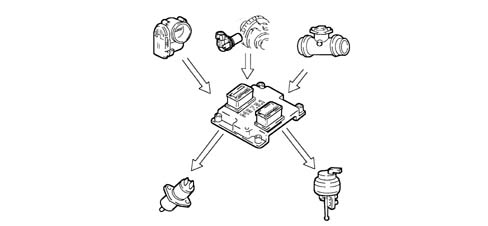
Knock control
The control unit detects the presence of detonation (engine knock) by processing the signal coming from the relevant sensor.
The control unit continuously compares the signals coming from the sensor with a threshold which is, in turn, continually updated to take into account background noise and engine ageing.
The control unit is therefore capable of detecting the presence of detonation (or the onset of detonation) in each individual cylinder and reduces the ignition advance in the cylinder involved (in steps of 3° up to a maximum of 6°) until the phenomenon disappears. Later on, the advance is gradually restored to the basic value (in steps of 0.8°).
In acceleration conditions, a higher threshold is used to take into account the increased noise of the engine in these circumstances.
The detonation control logic also has a self-adjustment function which memorizes the reductions in the advance that are continuously repeated in order to adapt the map to the different conditions that the engine finds itself in.
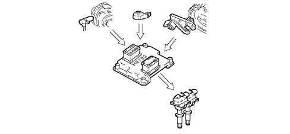
Check on enrichment during acceleration
If, during the acceleration request, the variation in the air flow meter signal exceeds a pre-set level, the control unit increases the injection (time) to compensate for the variation in the mixture ratio due to the increased pressure in the intake manifold (less fuel evaporation) which allows the required engine speed to be reached quicker.
RECOVERY
The control unit replaces the signal coming from the air flow meter which is faulty with the throttle potentiometer signal.
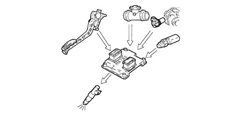
Fuel cut-off during deceleration
When the accelerator pedal is released and beyond a pre-set engine speed level, the control unit:
- cuts off the supply to the injectors
- reactivates the supply to the injectors at 1300 - 1500 rpm
If there is no supply, the number of revs decreases with the speed depending on the vehicle driving conditions.
Before the idle speed is reached, the progress of the engine speed decrease is checked.
If it is above a certain value, the fuel supply is partly restored so that there is a "gentle accompaniment" towards the idle speed.
The levels for restoring the supply and for cutting off the fuel vary according to:
- engine coolant temperature
- vehicle speed
- engine rpm.
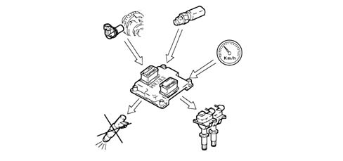
Fuel vapour recovery
Fuel vapours (pollutants) collected in the activated carbon filter (canister) are directed to the intake ports to be burnt.
This takes place by means of a solenoid valve controlled by the control unit only when the engine operating conditions allow.
The control unit compensates for this additional amount of fuel with a reduction in the supply to the injectors.
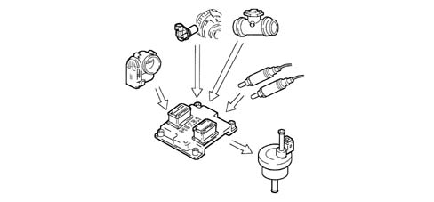
Maximum rpm check
According to the rpm level reached by the engine, the control unit:
- above 6800 rpm, cuts off the fuel supply to the injectors (rpm can rise to a peak of 7000 rpm for a period no longer than 3 secs.).
- below 6800 rpm, injector control is resumed.
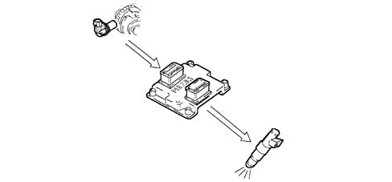
Fuel supply - electric fuel pump check
The control unit supplies the pump:
- with the ignition ON for 0.2 secs.
- with the ignition in AVV and the engine speed > 22.8 rpm
The control unit cuts off fuel supply to pump:
- with the ignition key in the OFF position
- with the engine speed < 22.8 rpm.
The returnless fuel supply system ensures a constant pressure of 3.5 bar.
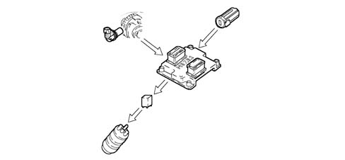
Connection with climate control system
When there is a request for power, due to the compressor being switched on, the control unit adjusts the air flow rate with the advantage of maintaining optimum driveability.
The control unit momentarily cuts off the supply to the compressor:
- during starting
- switching it off when the engine temperature is > 112°
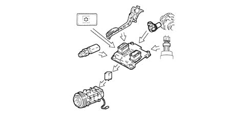
Recognition of cylinder position
During each engine revolution, the control unit detects the cylinder in combustion phase:
- controls the injection and ignition sequence for the appropriate cylinder.
If there is no timing sensor signal, the control unit:
- deactivates the detonation sensor.
- maintains the phased injection with the vehicle moving
- with the engine started, the engine management node controls the individual coils involved which, in turn, simultaneously control the two spark plugs for each cylinder.
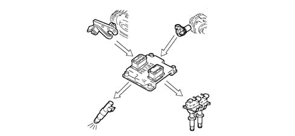
Injection time adjustment
The control unit calculates the injector opening time and controls them with extreme precision and speed depending on the:
- engine load (number of revs and air flow rate)
- battery voltage
- engine coolant temperature:
The injection is the phased, sequential type for each cylinder and takes place corresponding to the optimum injection point "start of injection", with the "end of injection" point remaining fixed.
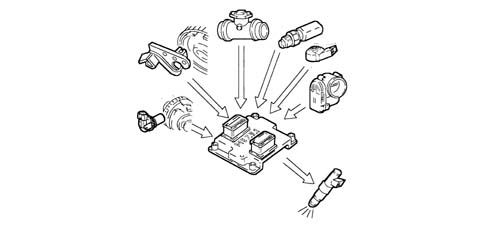
Ignition advance adjustment
Thanks to a map stored in its memory, the control unit is capable of calculating the ignition advance depending on:
- the engine load (minimum, partial, full, according to the number of revs and the air flow rate)
- the intake air temperature
- the engine coolant temperature.
The ignition can be selectively delayed at the cylinder required, recognized through the combination of values recorded by the rpm and timing sensors.
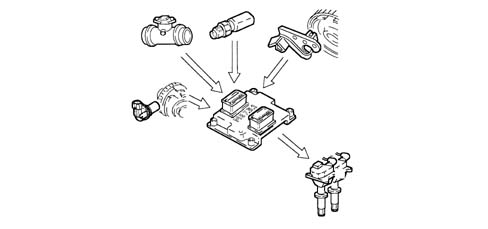
Idle speed check
The control unit detects idling status when the accelerator pedal is released.
To control the idle speed, depending on the consumers switched on and the brake/clutch pedal signals, the control unit controls the position of the motorized throttle.
The idle speed when warm is 850 ± 50 rpm
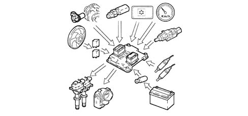
Engine cooling fan check
Depending on the temperature of the coolant, the control unit controls the engagement of the fan:
- 1st speed activation temperature 97°C
- 2nd speed activation temperature 102°C
There is then a further check (4 stage pressure switch signal) which switches on the fan at the 1st or 2nd speed depending on the pressure of the refrigerant gas when the air conditioning system is switched on.
When no coolant temperature signal is present, the control unit implements the recovery function by activating the fan at the 2nd speed until the error disappears.

Me.7.3.1 injection/ignition control unit
The control unit is fitted in the engine compartment above the throttle casing and is capable of withstanding high temperatures.
The control unit memory is the flash EPROM type, i.e. it can be reprogrammed from the outside without affecting the hardware.
The adoption of the Alfa Romeo CODE (immobilizer) means that control units cannot be swapped between vehicles.
The self-learning procedure must be carried out if the injection control unit or the air chamber or the throttle casing integrated with D.V.E, is replaced.
PIN OUT
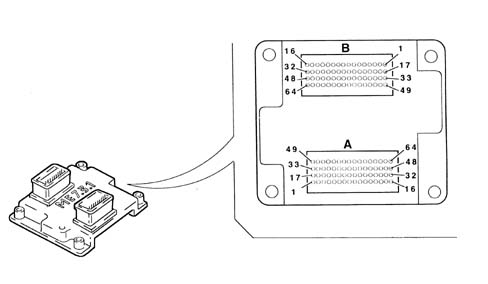
A1 - Not connected
A2 - Not connected
A3 - Alfa Romeo CODE connection
A4 - Not connected
A5 - Not connected
A6 - Compressor activation request
A7 - Accelerator pedal potentiometer supply
A8 - Potentiometer signal - 1 accelerator pedal
A9 - Quadrinary - fan 1st speed request
A10 - Cruise Control ON/OFF
A11 - Not connected
A12 - CAN-L line
A13 - Compressor relay control
A14 - Not connected
A15 - Direct power supply
A16 - Ignition-operated power supply, via main relay
A17 - Not connected
A18 - Cruise Control warning light
A19 - MOT. T warning light
A20 - Provision for "Flash programming"
A21 - Not connected
A22 - Fuel level sensor
A23 - Not connected
A24 - Potentiometer earth - 1 accelerator pedal
A25 - Potentiometer earth - 2 accelerator pedal
A26 - Brake light switch
A27 - Brake light switch
A28 - Not connected
A29 - CAN-H line
A30 - Fuel pump relay control
A31 - Main relay activation
A32 - Ignition-operated power supply, via main relay
A33 - Not connected
A34 - Not connected
A35 - Rev counter signal
A36 - Not connected
A37 - Not connected
A38 - Not connected
A39 - Not connected
A40 - Potentiometer signal - 2 accelerator pedal
A41 - Quadrinary - fan 2nd speed request
A42 - Cruise Control Resume
A43 - Cruise Control SET +
A44 - Speedometer sensor signal
A45 - CAN-H line
A46 - Injection warning light
A47 - Ignition-operated power supply
A48 - Ignition-operated power supply, via main relay
A49 - Not connected
A50 - 1st speed fan control
A51 - Not connected
A52 - Fuel consumption signal
A53 - Diagnostics connector (K line)
A54 - Air temperature sensor signal
A55 - Not connected
A56 - Power supply for accelerator pedal potentiometer
A57 - Air flow meter signal
A58 - Cruise Control SET -
A59 - Clutch pedal switch
A60 - Oil pressure switch
A61 - CAN-L line
A62 - Fan 2nd speed control
A63 - Power supply for flow meter
A64 - Not connected
B1 - Throttle body motor earth
B2 - Lambda sensor heating (left pre-cat.)
B3 - Cylinder injector control 4
B4 - Variable geometry solenoid valve control
B5 - Fuel vapour solenoid control
B6 - Reference earth for knock sensor 2
B7 - Lambda sensor earth (left pre-cat.)
B8 - Not connected
B9 - Not connected
B10 - Engine rpm sensor
B11 - Not connected
B12 - Not connected
B13 - Not connected
B14 - Cylinder 4 coil control
B15 - Not connected
B16 - Cylinder 1 coil control
B17 - Throttle body motor power supply
B18 - Not connected
B19 - Cylinder injector control 1
B20 - Not connected
B21 - Not connected
B22 - Detonation sensor 1
B23 - Lambda sensor signal (right pre-cat.)
B24 - Potentiometer 1 throttle body.
B25 - Engine coolant temperature
B26 - Sensor reference earth
B27 - Not connected
B28 - Lambda sensor signal (post-cat.)
B29 - Not connected
B30 - Cylinder 3 coil control
B31 - Cylinder 2 coil control
B32 - Not connected
B33 - Throttle body motor earth
B34 - Lambda sensor heating (right pre-cat.)
B35 - Cylinder injector control 3
B36 - Phase transformer control
B37 - Not connected
B38 - Not connected
B39 - Lambda sensor signal (left pre-cat.)
B40 - Potentiometer 2 throttle body.
B41 - Not connected
B42 - Timing sensor signal
B43 - Not connected
B44 - Not connected
B45 - Not connected
B46 - Not connected
B47 - Not connected
B48 - Not connected
B49 - Throttle body motor power supply
B50 - Lambda sensor heating (post-cat.)
B51 - Timing sensor power supply
B52 - Cylinder injector control 2
B53 - Not connected
B54 - Reference earth for knock sensor 1
B55 - Lambda sensor earth (right pre-cat.)
B56 - Not connected
B57 - Not connected
B58 - Throttle body motor potentiometer power supply
B59 - Engine rpm sensor
B60 - Lambda sensor earth (post-cat.)
B61 - Not connected
B62 - Not connected
B63 - Not connected
B64 - Not connected
Injectors
The injectors are the twin jet type and are fitted on the distribution manifold.
A safety clip secures the injectors to the distribution manifold and two o-rings ensure the seal.
The injectors are responsible for delivering the required amount of fue to the engine.
The devices are the "all or nothing" type because there are only two possible stable states, i.e. open or closed; the fuel passes through when they are open and the supply is blocked when they are closed.
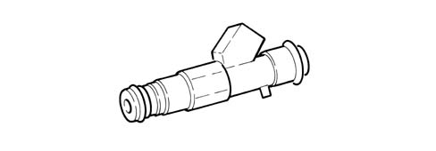
Engine coolant temperature sensor
This is fitted to the thermostat cup and detects coolant temperature by means of an NTC thermistor with negative resistance coefficient.
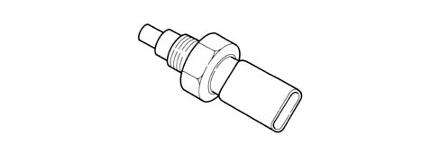
The sensor is designed using semiconductor technology. In other words, the resistance level drops if sensor element temperature increases with increasing coolant temperature.
Because the resistance does not change in linear fashion as temperature increases, it is relatively higher at low temperatures than at high temperatures.
Detonation sensor
The piezoresistive type detonation sensor is fitted on the crankcase between and measures the intensity of vibrations caused by knock in the combustion chambers.
The piezoresistant crystal in the sensor detects vibrations generated at frequencies between 12 and 16 Hz and converts them to electrical signals that are sent to the injection control unit.
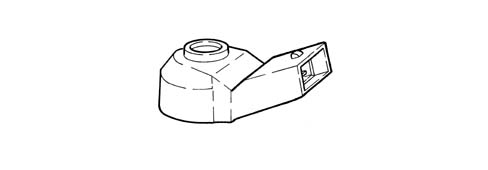
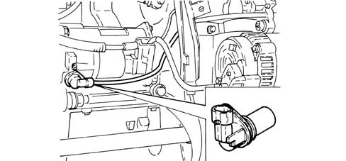
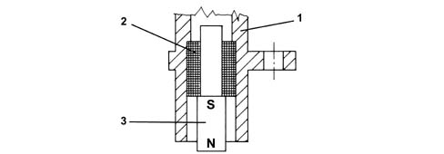
Timing sensor
This Hall effect sensor is fitted on the cylinder head facing the (exhaust) camshaft drive pulley.
The injection control unit uses the timing sensor signal to identify T.D.C. at the end of compression.
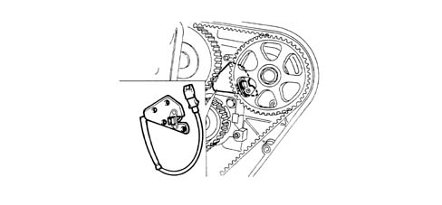
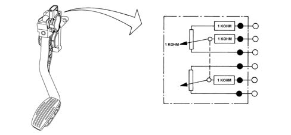
D.v.e.integrated throttle casing
This is fitted on the intake chamber and regulates the amount of air taken in by the engine.
According to the signal received from the accelerator pedal potentiometer, the injection control unit controls the throttle opening by means of a direct current motor built into the DVE integrated throttle body.
Throttle opening takes place from 0° to 80°, i.e. including idle speed adjustment range.
The DVE integrated throttle body is equipped with two built-in potentiometers, each of which controls the other.
If both potentiometers should fail or in the case of a power cut, the control unit reduces drive torque on the basis of accelerator pedal position.
- with the pedal fully depressed, it cuts off fuel to one or more pistons until a maximum speed of 2500 rpm is reached
- in the intermediate positions, it cuts off the supply to one or more pistons until a lower speed of 2500 rpm is reached.
The self-learning procedure must be carried out if the injection control unit or the air chamber or the throttle casing integrated with D.V.E, is replaced.

Air flow meter
The debimeter is located on the air intake sleeve and is hot film type.
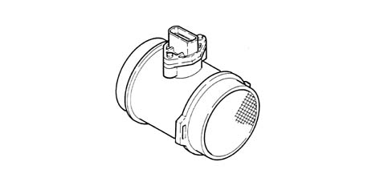
The intake air temperature sensor is built into the debimeter.
Operation
The principle of operation is based on a heated membrane positioned within a measurement channel that carries air into the engine.
The hot film membrane is maintained at constant temperature (about 120 °C higher than the incoming air temperature) by the heating coil.
The air mass that flows through the measurement channel tends to remove heat from the membrane. Current must therefore flow through the coil to maintain the membrane at a constant temperature.
This current is measured by a special Wheatstone bridge.
The current is therefore proportional to the flowing air mass.
The flowmeter measures the air mass directly (not the volume) to eliminate problems of temperature, altitude, pressure etc.